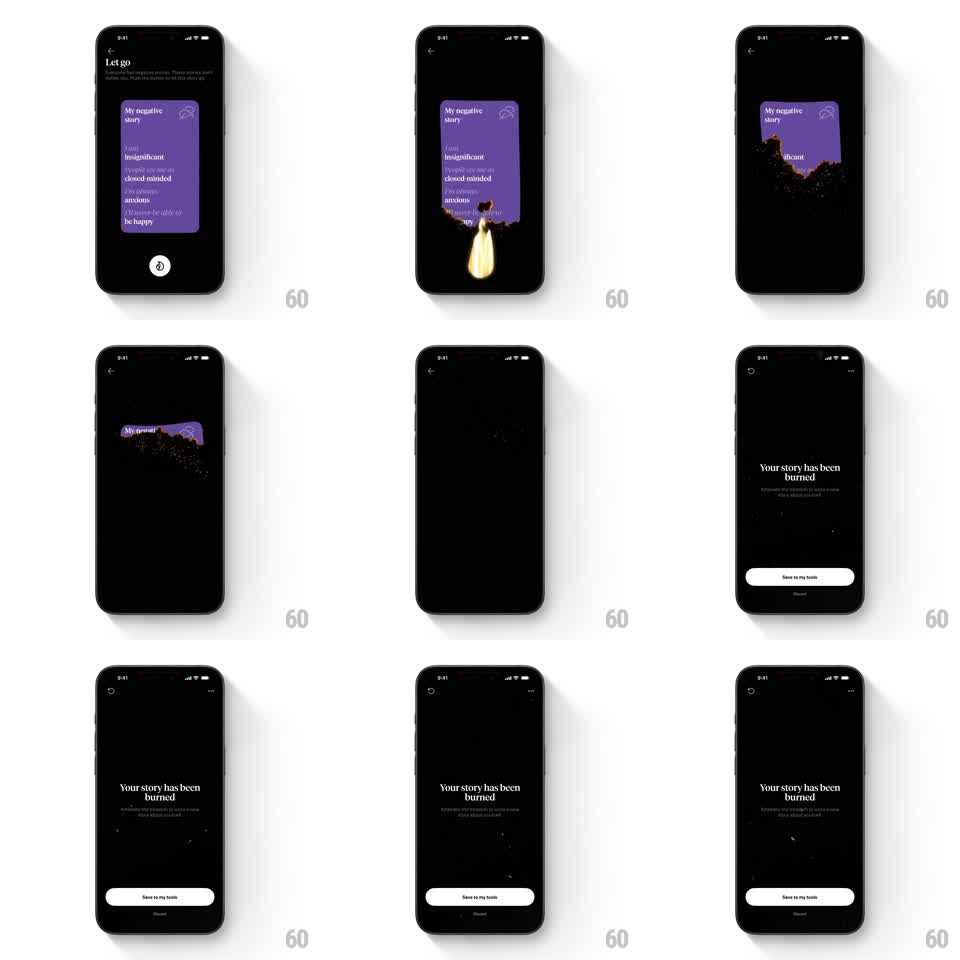

Media
Frame-by-frame

Rebuild this animation 1:1: How We Feel's letting-go ritual - the purple "My negative story" card catches fire from the bottom, burns upward with glowing ember edges, crumbles into drifting ash particles, and resolves to a "Your story has been burned" confirmation with Save/Discard actions.

Rebuild this animation 1:1: How We Feel's letting-go ritual - the purple "My negative story" card catches fire from the bottom, burns upward with glowing ember edges, crumbles into drifting ash particles, and resolves to a "Your story has been burned" confirmation with Save/Discard actions.
## Integration
Integration: stack-agnostic spec - springs given as stiffness/damping, timed motions as duration + curve; map every value to your framework and animation library of choice.
## Scene
Black "Let go" screen: a centered purple card listing negative thoughts ("I am insignificant, I am closed-minded, I am always anxious, I will not be able to be happy") with a cloud doodle, a flame button below. End state: "Your story has been burned" headline with subcopy, "Save to my tools" primary button and "Discard" link.
## Motion spec
Pattern: progressive paper burn, ~2.5s.
- Ignition: tapping the flame button lights the card's bottom edge - a bright orange-yellow burn line with flicker (100ms cycle) and rising heat glow.
- Burn front: the charred edge creeps upward (~55% of height per second), the consumed region dissolving into 30-60 ember particles that drift up with flicker and fade (1-1.5s lifetimes), plus dark ash flakes that flutter down.
- Char: the burn line leaves a blackened, crumbling edge with glowing orange rim (glow pulses at 6Hz).
- Resolve: once fully burned, the embers thin out, then "Your story has been burned" fades in (400ms) with the buttons sliding up (300ms, +150ms).
## Calibration
- The burn front is irregular - a wavy, eaten edge, never a straight line.
- Embers inherit the card's purple at first, cooling to orange then gray.
## Reduced motion
The card fades out (400ms) with a brief warm glow; no particles.
## Don't miss
- The card text stays legible until its region actually burns.
- The final screen is quiet and dark - the contrast after the fire is the point.